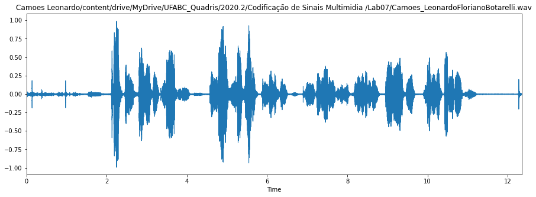
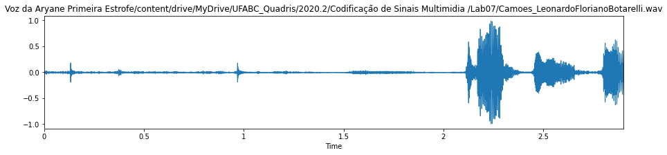
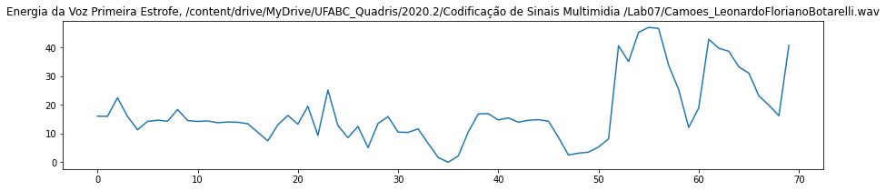
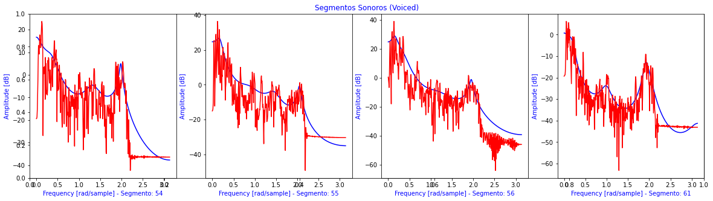
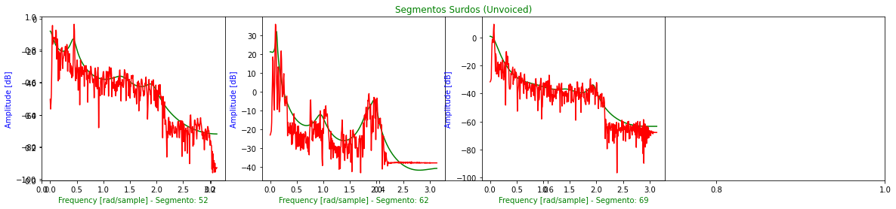

O áudio analisado refere-se ao trecho Camões utilizado na P2a.
O primeiro trecho refere-se à: Campos.
Onda sonora para áudio e primeiro trecho, energia para o primeiro trecho, segmentos sonoros (voiced) e surdos (unvoiced) para o primeiro trecho.
Limiar VAD 38.9412038726724
Limiar U/UV 41.641203872672406
Sonoros = 4 e Surdos = 3

Onda sonora para o áudio (completo) Camões de Leonardo.

Onda sonora para o áudio (primeiro trecho) Camões de Leonardo.

Energia para o áudio (primeiro trecho) Camões de Leonardo.

Espectro para segmentos sonoros (voiced) para o áudio (primeiro trecho) Camões de Leonardo.

Espectro para segmentos surdos (unvoiced) para o áudio (primeiro trecho) Camões de Leonardo.